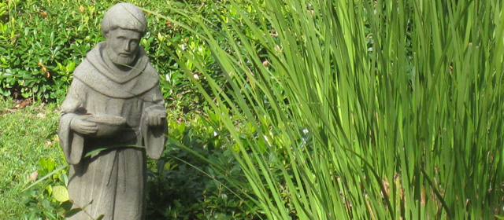

Where All Are Welcome
Call the Parish office : 916-985-2065
Penance/Reconciliation

- Jesus Christ gave his Apostles the power to forgive sins. The Sacrament is also known as the Sacrament of Conversion, Forgiveness, Penance, or Reconciliation.
- During the persecution of the Roman Emperor Decius (249-251), many Christians left the Church rather than suffer martyrdom. The martyr St. Cyprian, Bishop of Carthage, allowed apostates the Sacrament of Confession, as recorded in his Letter De Lapsis (The Lapsed) in 251.
- The sacrament involves three steps: the penitent's contrition or sorrow for his sins, the actual confession to a priest and absolution, and then penance or restitution for your sins. The experience leads one to an interior conversion of the heart. Jesus describes the process of conversion and penance in the Parable of the Prodigal Son (Luke 15:11-24).
- The penitent confesses his sins to the priest in the confessional, and the priest then gives absolution to the repentant soul, making the Sign of the Cross, and saying the words " I absolve you from your sins, in the name of the Father, and of the Son, and of the Holy Spirit." It is Christ Jesus through the priest who forgives your sins. As the penitent must make restitution or satisfaction for his sins, the priest gives a penance to the forgiven one, usually prayer, fasting, or almsgiving (1 Peter 4:8).
- Confession gives one a wonderful sense of freedom and peace from the burden of sin. Sorrow, affliction, and a desire for conversion follow the remorse of sin in those with a contrite heart. Some believe we can confess our sins privately to God. But man is a social being. The humbling experience of unburdening your soul to someone, of exposing your weak nature, and then being accepted for who you are and what you have done by having your sins forgiven brings one an incredible sense of relief! The experience brings a sense of gratitude to our generous Lord for his love, compassion and mercy.
- As one is to be in the state of grace before receiving Holy Communion, the child makes his first Confession before his first Communion, generally at the age of reason. Here are three Scriptural references on Penance (See also Matthew 16:18-19, Luke 24:46-47, Acts 2:38):
| Sacrament | Biblical Basis | Central Words | Central Actions | Effects |
|---|---|---|---|---|
| Penance/ | John 20:23 - "If you forgive the sins of any, they are forgiven them; if you retain the sins of any, they are retained"; |
"I forgive you of all of your sins, in the name of the Father, and of the Son, and of the Holy Spirit" (the "Words of Absolution") |
The penitent confesses his sins, expresses contrition, and proposes amendment; the confessor suggests a penance and speaks the words of absolution. |
Begin forgiven of one's sins; being reconciled to God the Church, and other people. |
| Reconciliation | Matt 16:19; 18:18 - more sayings on "binding and loosing"; James 5:16 - "confess your sins to one another" |